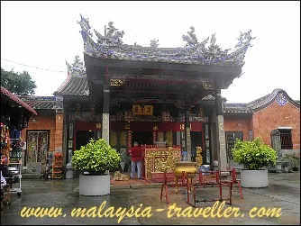
Snake Temple
Real venomous Wagler's pit vipers coil around the altar — no glass, no barrier. Legend says the incense keeps them drowsy.[1]
Sacred & strangefreeTwenty-odd weird, eerie and unexpected finds a first-timer walks straight past — pinned to the board, grouped by flavour of odd. Each card tags where and why it's weird. All open year-round.

Real venomous Wagler's pit vipers coil around the altar — no glass, no barrier. Legend says the incense keeps them drowsy.[1]
Sacred & strangefree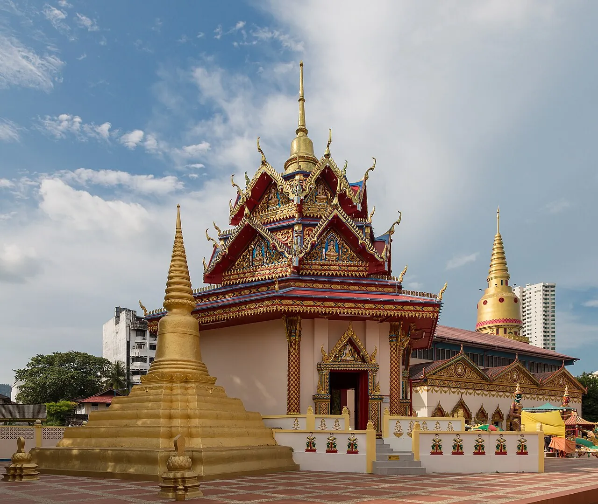
A 33 m gold Buddha that doubles as a columbarium — the cremated dead rest in niches built into its plinth.[33]
Sacred & strangefreeCross one street and swap an entire national Buddhist tradition — the only Burmese temple in Malaysia, facing the Thai one.[34]
Sacred & strangefree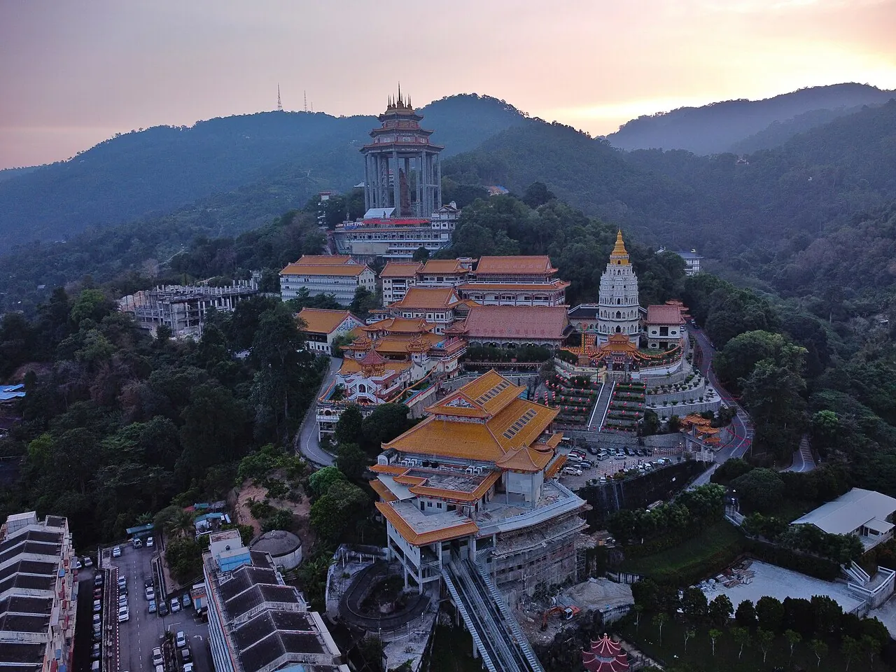
Behind the 30 m bronze Guanyin: a heaving "Liberation Pond" where pilgrims release turtles to earn merit — longevity piled up by the hundred.[36]
Sacred & strange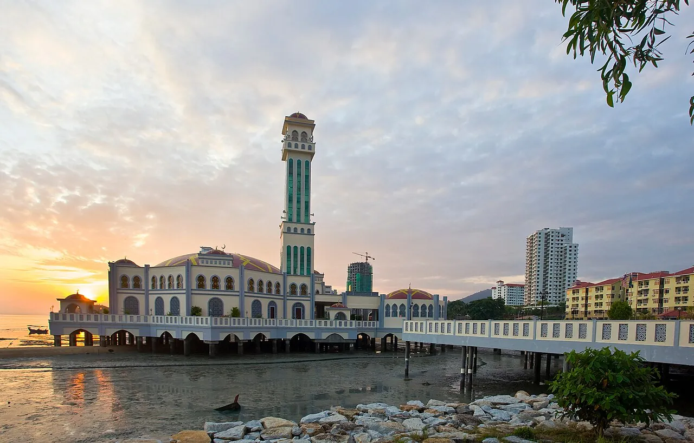
Built on stilts driven into the seabed, it "appears to float" at high tide — Malaysia's first mosque over the open sea, replacing one lost to the 2004 tsunami.[37]
Sacred & strangefree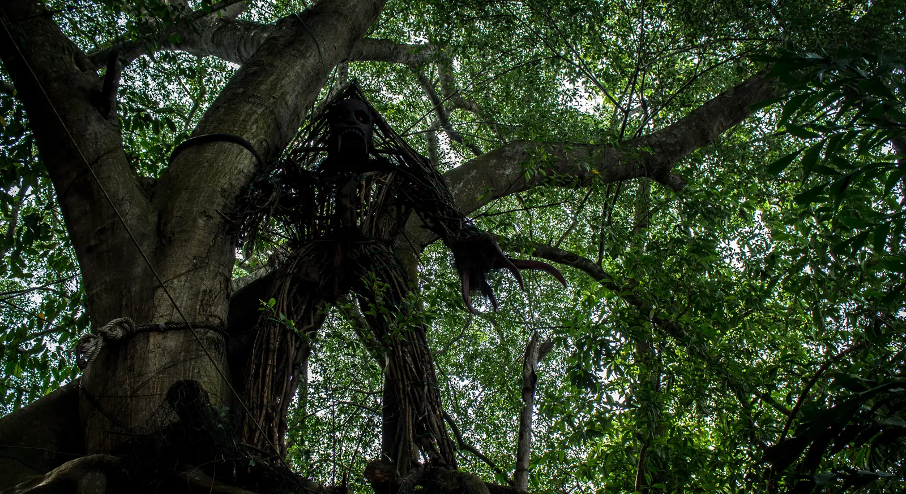
A British fort turned Japanese POW camp — a hillside laced with bat-filled tunnels, billed since a 2013 Nat Geo shoot as one of the most haunted places in Asia.[3]
Macabre & haunted≈ €8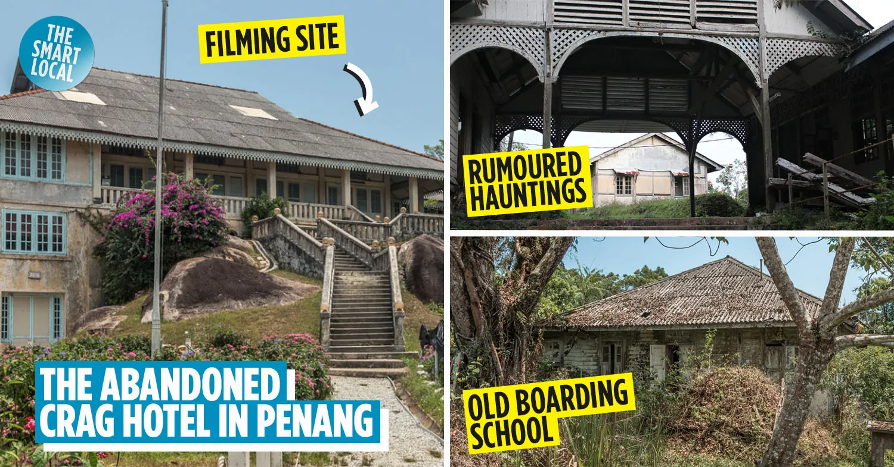
An 1880s Sarkies hill hotel, then a POW prison, then a boarding school, then a film set for Indochine — "as of January 2026 it continues to lie in ruins."[8]
Macabre & hauntedfree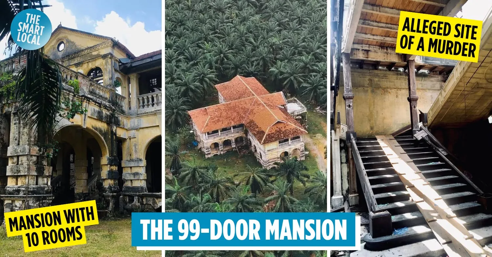
A 158-year-old plantation mansion with ~99 doors. Its rubber-baron owner was shot dead on the staircase in 1948 — unsolved, and the rumours never settled.[10]
Macabre & haunted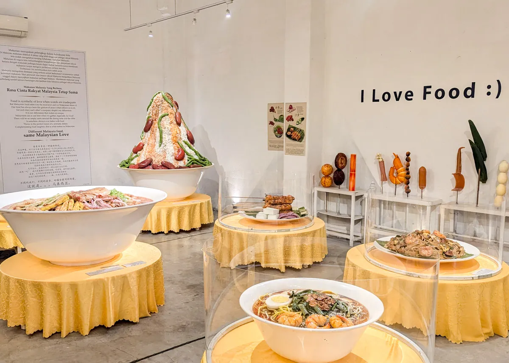
100+ giant replica street-food dishes — pose inside a man-sized bowl of asam laksa. A city happy to be silly.[12]
Weird museumPan-Asian folklore monsters under one roof: the pontianak, the jiang shi hopping zombie, the Ju-on.[13]
Weird museumFurniture bolted to the ceiling so you photograph yourself "falling up."[14]
Weird museum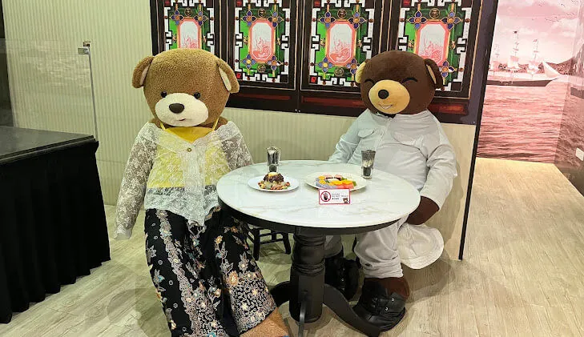
Malaysia's largest teddy-bear collection — bears dressed as historical Penangites through the eras.[17]
Weird museumThe island's first big 3D trick-art gallery — ~30 illusion paintings you step into.[15]
Weird museum~100 species of carnivorous Nepenthes pitcher plants, plus Venus flytraps — "monkey cups" the monkeys drink from. Wild ones grow on the slopes above 300 m.[16]
Curious nature≈ €1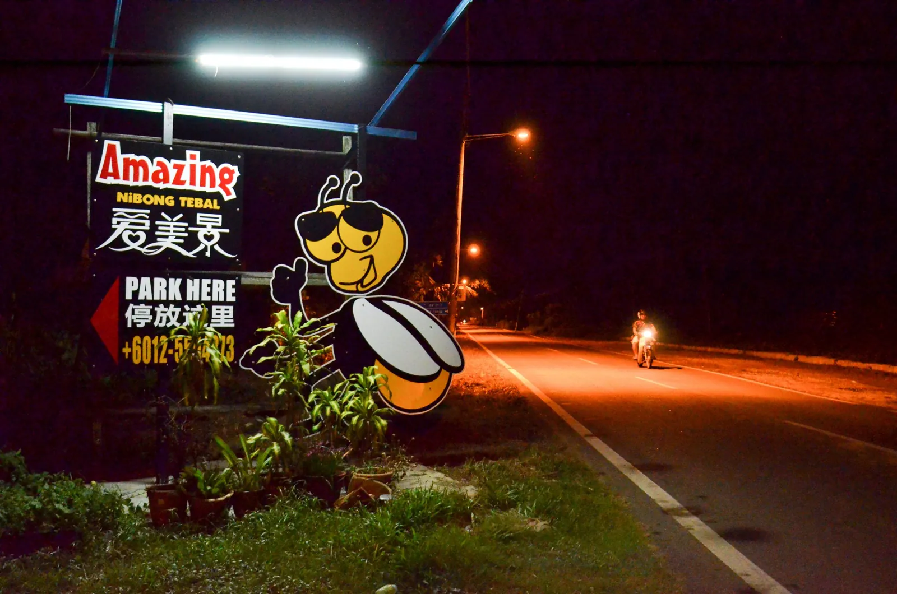
A 40-minute night boat past mangroves studded with thousands of fireflies pulsing in unison — the quiet Penang-side alternative to Selangor.[20]
Curious natureHold Up! is a café whose orange refrigerator swings open into a bar after dark; Magazine 63 hides craft cocktails behind a plain wooden door.[21]
Hidden doorA 1940s bus terminus left derelict, reborn in 2014 as an indie art compound — galleries and a weekend market, graffiti still flaking off the loading bays.[23]
Hidden doorfree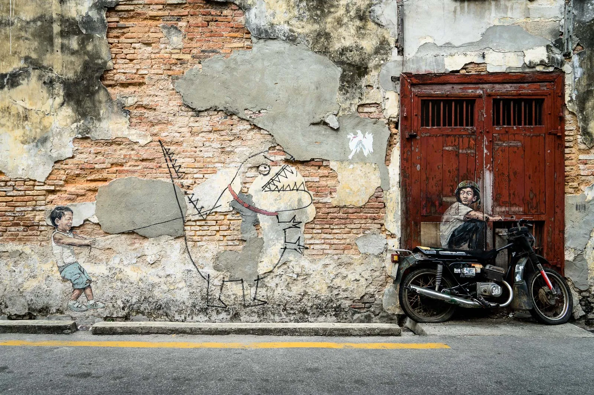
Beyond the Instagram murals: 52 wrought-iron comic-strip panels bolted to walls, each explaining how an old street got its name. Zacharevic's pieces even graft a real motorbike into the wall.[24]
Street art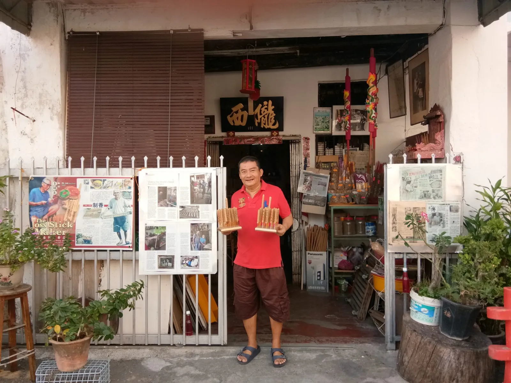
Since ~1948, hand-rolled incense from sandalwood, agarwood and "Tibet holy grass." Nearby, the city's last songkok maker still hand-sews Malay caps — survivors documented by GTWHI.[27]
Vanishing tradeA Michelin Bib Gourmand bowl whose signature is cubes of coagulated pig's blood floating in spiced coconut broth with cockles and tau pok.[31]
Stomach-churningThe whole animal in one peppery broth — liver, heart, intestine, kidney, stomach, tongue, lung and blood curd.[32]
Stomach-churning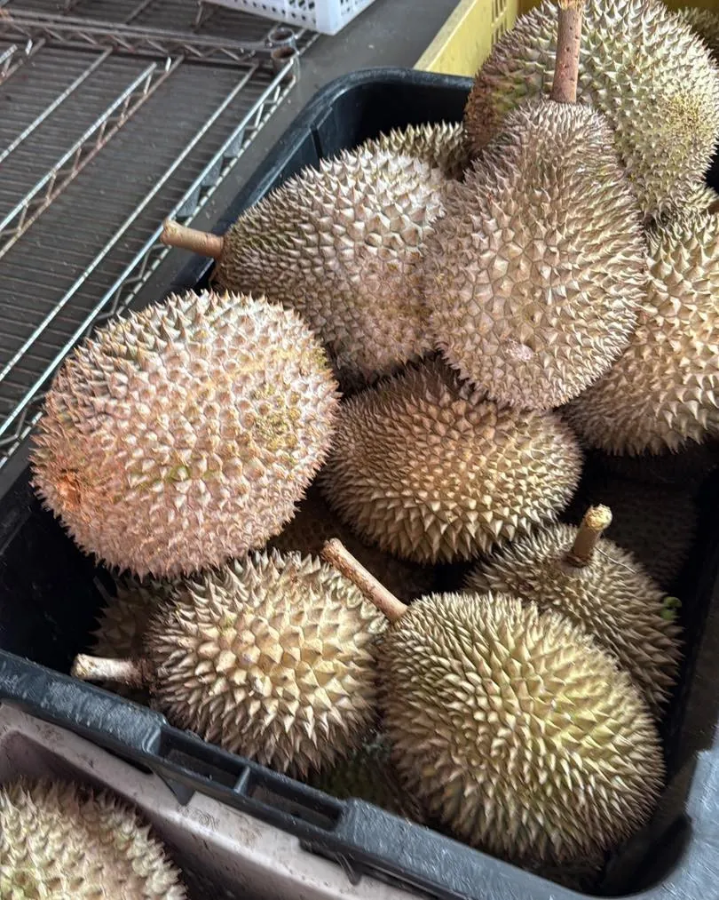
Two-hour farm sessions chasing rare hill cultivars with a numbing, almost anaesthetic aftertaste — Balik Pulau's durians run "stronger, thicker, richer."[30]
Stomach-churning≈ €25Clan associations compete to erect the tallest blue-faced, fanged "King of Hell" paper-and-rattan giants — then burn them at the finale.[39]
Fire & flesh